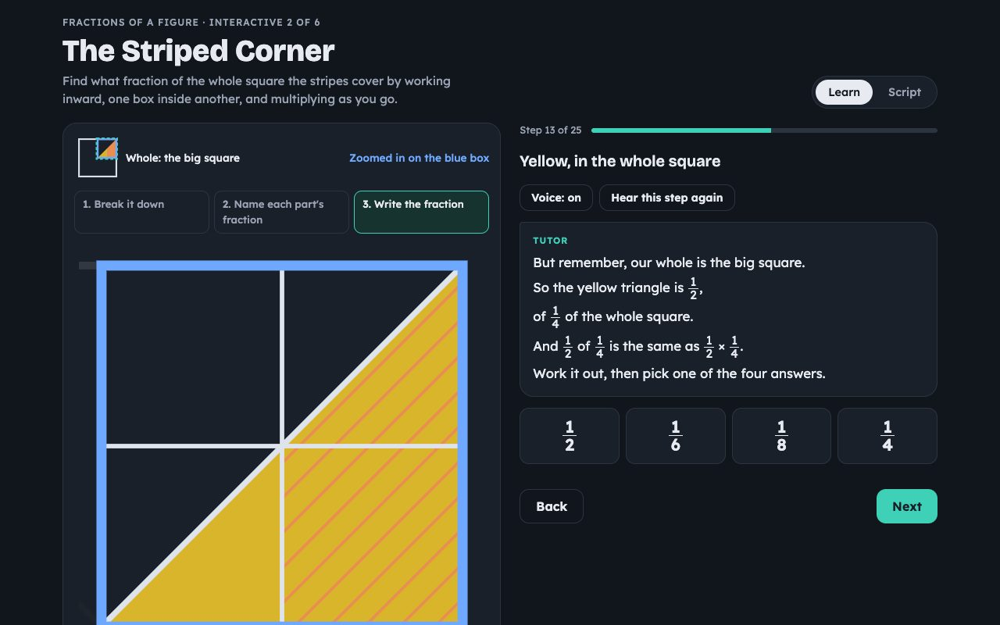
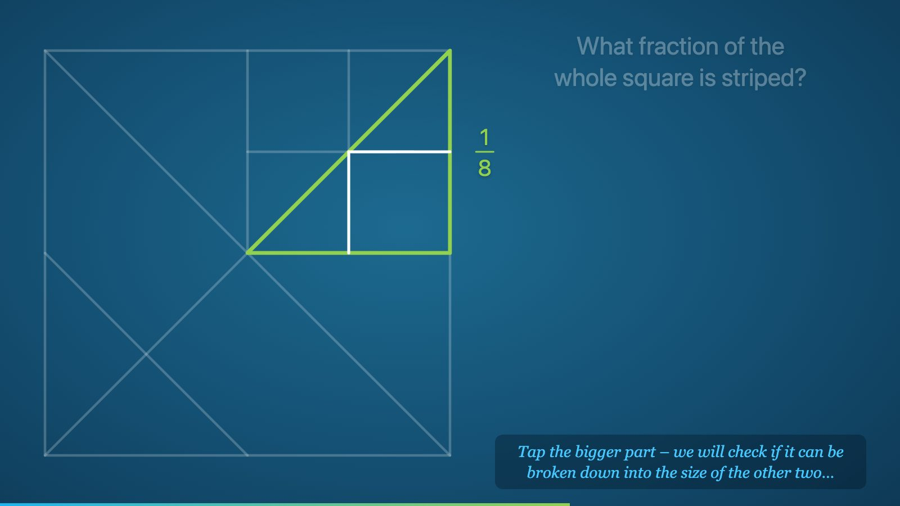
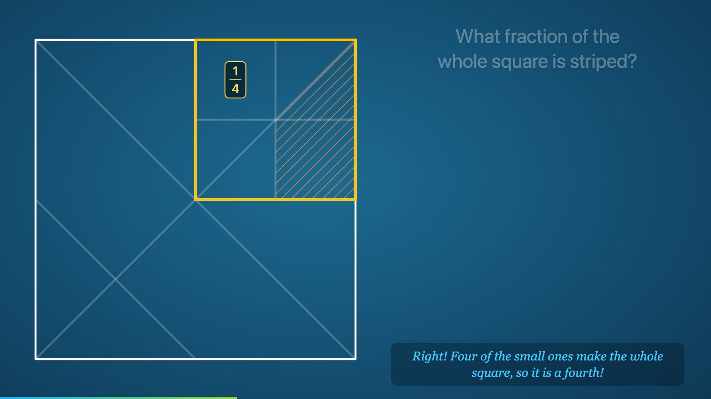
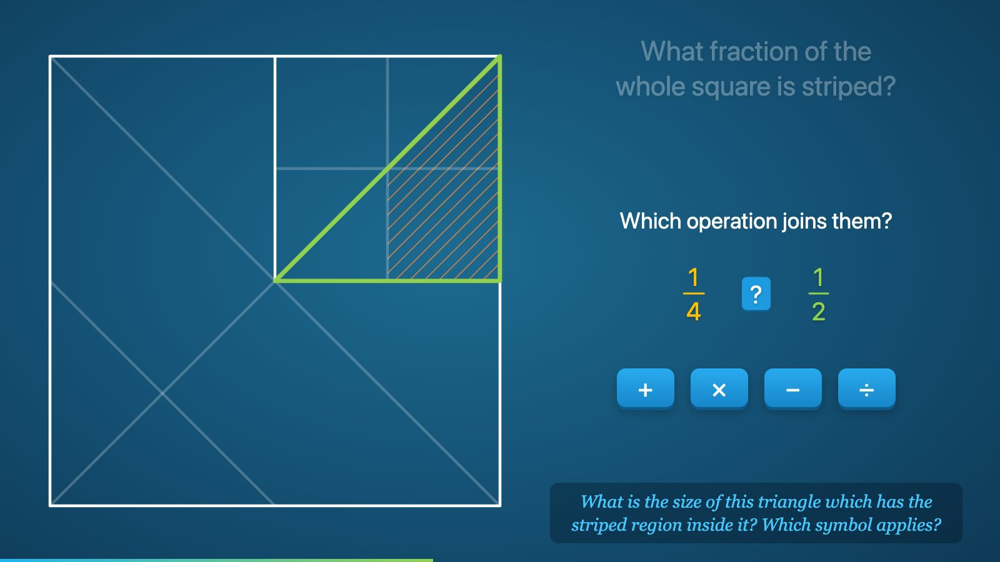
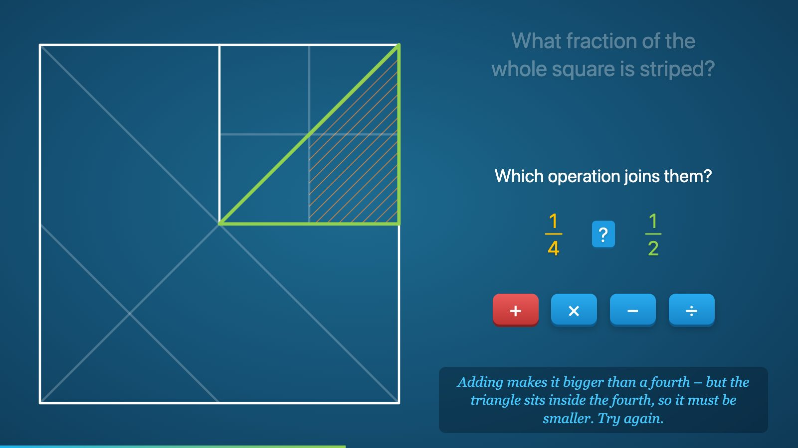
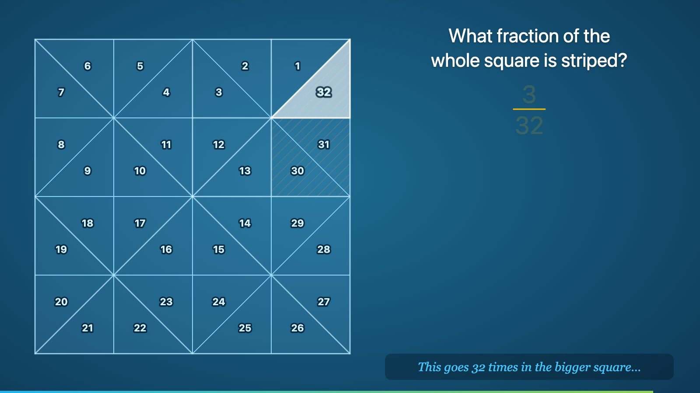
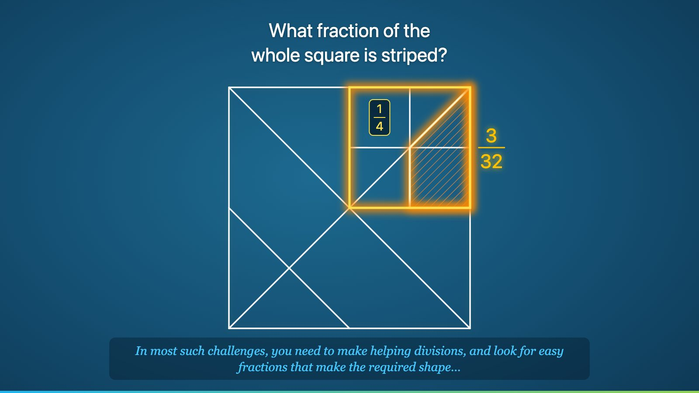
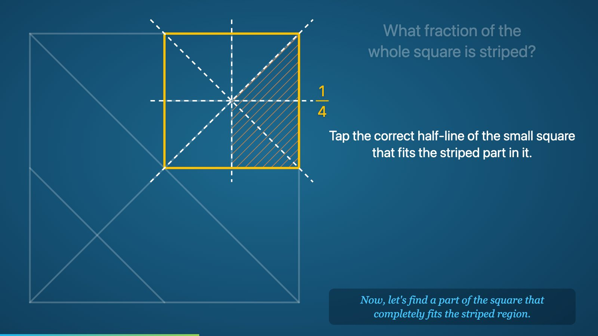
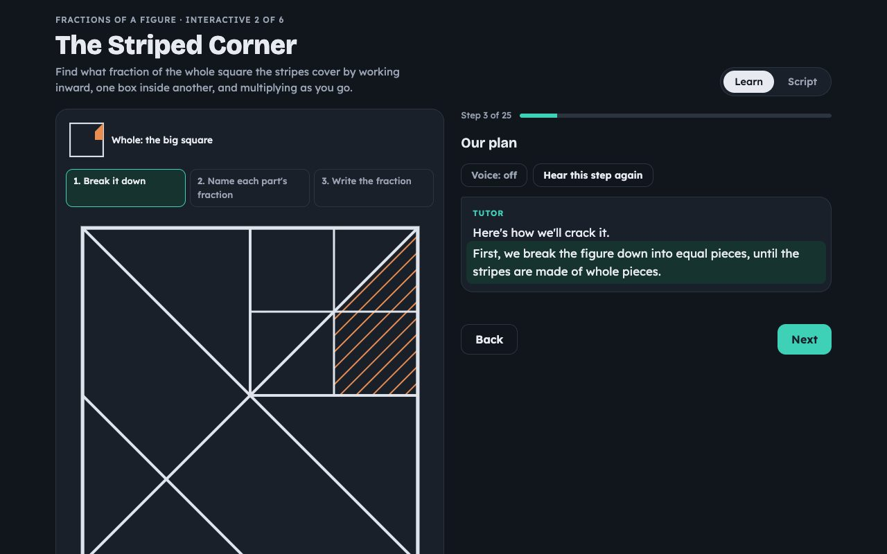
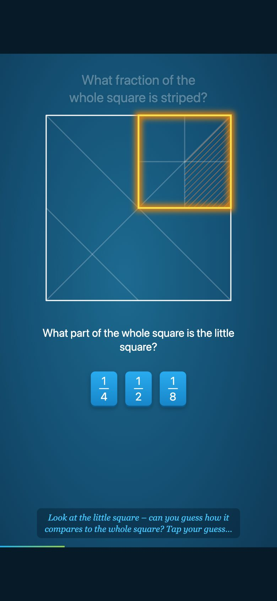

1Keep the whole on screen
Zooming in hides the whole — and then it takes lines and a mini-map to bring it back.

✕
✓Two narrated applets for the same problem. A is another team's; C is ours. Ten rules came out of comparing them — each one shown on the screens, not just told.
Zooming in hides the whole — and then it takes lines and a mini-map to bring it back.

✕
✓The eye shouldn't commute between the figure and a list.

✓Choosing × is stronger than hearing "of means ×".

✓Not "try again" — say what that pick did, using the bound: it sits inside ¼, so it must be smaller. (A does this well too.)

✕Light follows the step: squares fade while the work is inside them, and return when the whole matters again.
The 32nd tile becomes the denominator; the 3rd striped tile becomes the numerator. No separate "predict 32" question.

The same stamp marks every holder — 1/1, ¼, ⅛, 1/32 — and the ending replays them in place. Recognition, not a slogan.

✓Slanted or vertical — both hold the stripes, and each is followed through to 3/32. Decompositions aren't unique.

✓✓Speech carries the words. On-screen text should be a short echo, off to the side.

✕One lesson, two shapes. Figure and panel keep their roles; only the split turns.
